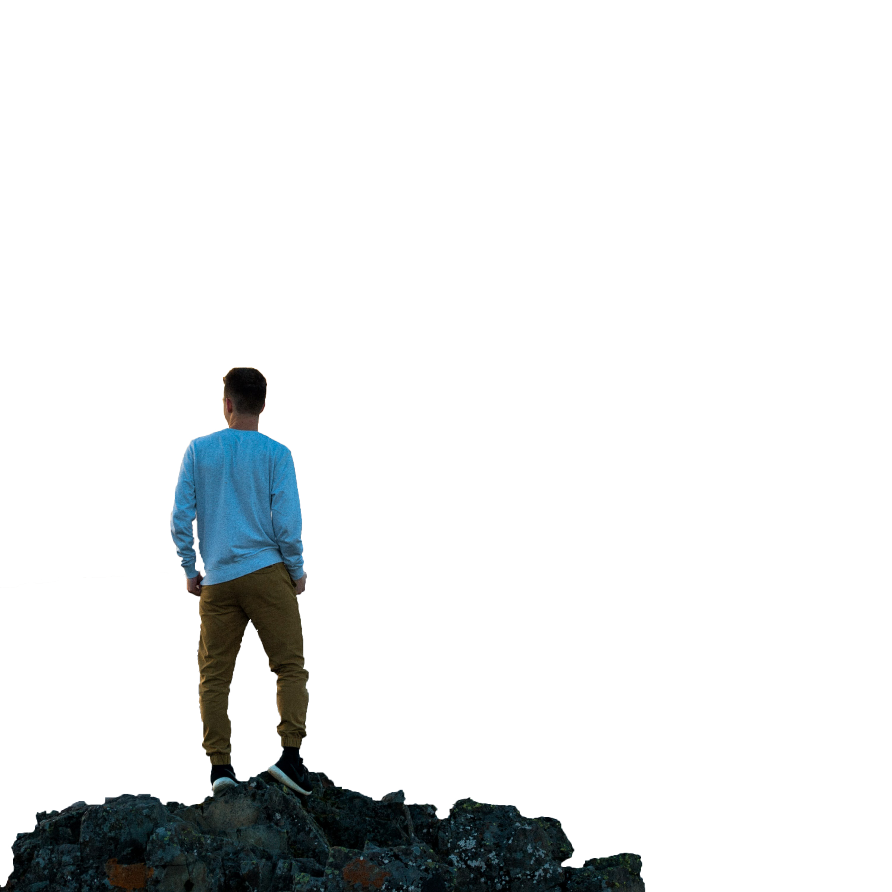

Aventure-toi



Surnommées les « Dolomites suisses », ces impressionnantes falaises calcaires offrent un décor spectaculaire entre Fribourg et Berne. Que vous soyez randonneur, grimpeur ou simple amoureux de la nature, les Gastlosen vous séduiront par leurs panoramas à couper le souffle, leurs sentiers variés et leur ambiance alpine authentique. Respirez l’air pur, explorez des paysages sauvages, et vivez une expérience inoubliable au cœur des Préalpes de la Gruyère,

Point culminant du canton de Fribourg avec ses 2 389 mètres, le Vanil Noir domine fièrement les Préalpes fribourgeoises. Ce géant de calcaire séduit les randonneurs aguerris par son itinéraire sauvage, ses crêtes vertigineuses et ses vues à couper le souffle sur les Alpes suisses. Classé réserve naturelle, le massif abrite une faune et une flore d’exception – bouquetins, chamois, aigles royaux… Une ascension exigeante mais inoubliable pour les passionnés de montagne à la recherche d’authenticité et de grandeur.
Surnommées les « Perché à 2 252 mètres d’altitude, le Dent de Savigny offre une aventure alpine inoubliable. Accessible aux randonneurs expérimentés, son sommet récompense les efforts par une vue panoramique spectaculaire sur les Alpes vaudoises, le massif du Vanil Noir et la région de la Gruyère. Entre pâturages paisibles et crêtes vertigineuses, laissez-vous séduire par le charme authentique de ce sommet emblématique. Parfait pour les amoureux de la montagne en quête de silence, de nature et de sensations fortes.